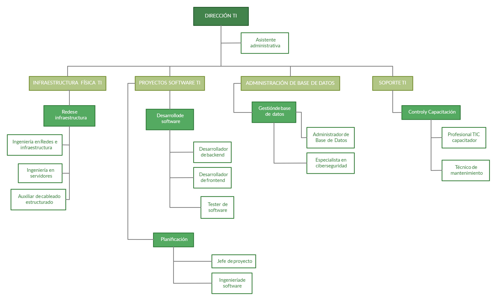

ORGANIGRAMA DE LA DIRECCIÓN DE TECNOLOGÍAS DE LA INFORMACIÓN Y LA COMUNICACIÓN

Total de personal disponible en el departamento 24 personas
DIRECCION TI
INFRAESTRUCTURA TI
- 1 Ing. Infraestructura
- 1 Ing. Servidores
- 2 Auxiliar de cableado estructurado
PROYECTOS SOFTWARE TI
Desarrollo:
- 3 Desarrollador de backend
- 3 Desarrollador de frontend
- 2 Tester de software
Planificación:
- 1 Jefe proyecto
- 1 Ing. software
ADMINISTRACIÓN DE BASE DE DATOS
- 2 Administrador de Base de Datos
- 1 Especialista en ciberseguridad
SOPORTE TI
- 2 Profesional TIC capacitador
- 3 Técnico de mantenimiento